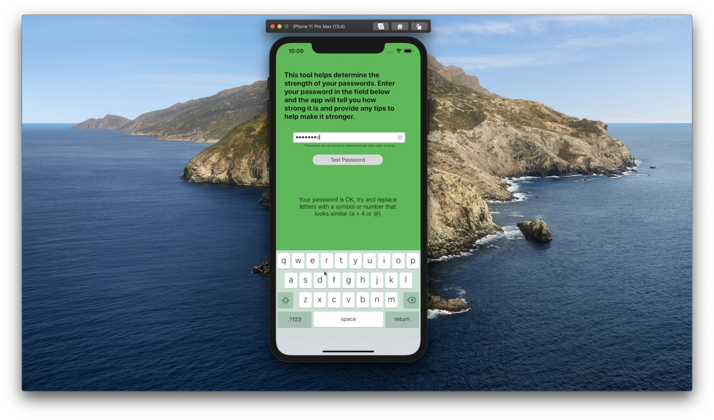
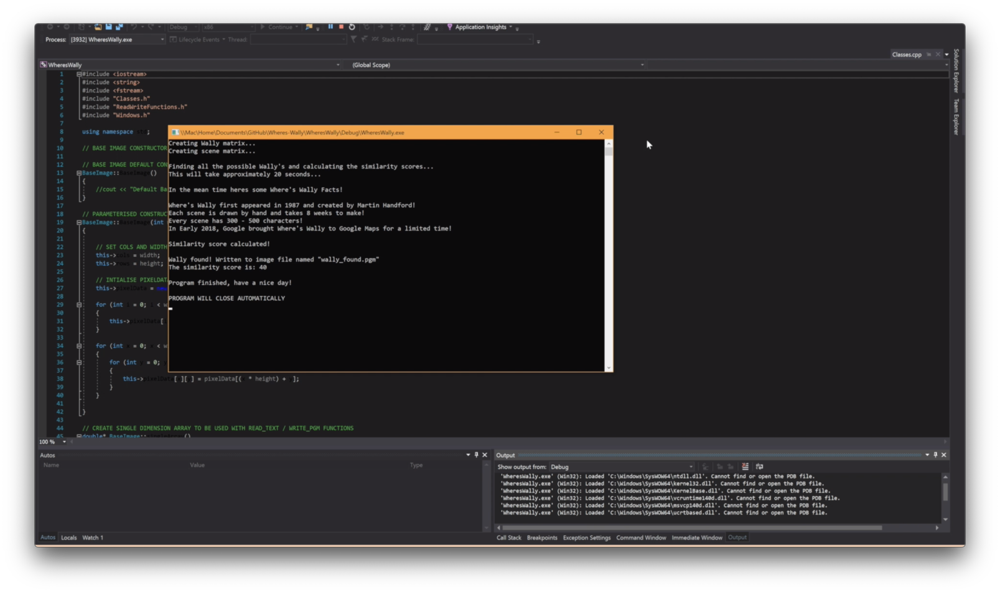

About
A postgraduate originally from Lowestoft attending the University of Lincoln, UK undergoing a
Computer Science by Research Masters in cyber security and machine learning. Giving you an insight to what I have done/doing/can do and would
like to do for myself or even you?
So what you waiting for? Take a look at what I have done or read more about me and make your own opinion.
My interest never started in tech and programming, it started in sport where I did Sport and Exercise Sciences in high school and college.
After college I stared working full time in a restaurant waiting on tables for 2 years before attending college again to train in technology.
After attending college for another 2 years and earning very high grades, I started University in 2017 where I have had the most amazing experience
and learnt so many valuable skills in the area of Computer Science.
I am still very passionate about sport, I have played football from the ages 10-19, I attend the gym very regularly and have picked up a new sport Ultimate
Frisbee while at University.
Portfolio
Umbriel
This was a little summer project after completing my third year of University to ease the boredom of the summer break. The inspiration for the project was for one it took a feature from my University project into a more sophisticated version and also my password manager subscription was coming to an end so I could use this as a free alternative.
Technologies Used
// Xcode
// SwiftUI
// CoreData
// CloudKit
Features
// Modern UI built in 100% SwiftUI
// Password strength tester with precise and helpful UI and UX
// Password generator with controls for password flexibility
// Secured vault using biometrics to store passwords


University Project
I chose my final year project to be an application that can identify mobile vulnerabilities and output the results to the user. This combined two of my interests in technology; mobile app development and cyber security.
I chose the kind of vulnerabilities the app would identify which included weak passwords, un-secure WiFi, file checker and connected Bluetooth devices. A password would be classified weak by using pre-determined attributes such as length, use of uppercase and lowercase letters, numbers and symbols. The WiFi scanner checks for the kind of ports that are open and would instruct the user if any unnecessary ports were open that could cause their phone to be hacked. The Bluetooth connection feature would output any connected devices and if a user did not recognise any they can delete it. The file checker allows the user to browse the file system on their device and they can select a document which would be checked if it could contain malicious code that would compromise the device.
Technologies Used
// Visual Studio
// Xamarin.iOS
// UIKit
// CloudKit
// C#
// CoreBluetooth
// MobileCoreServices
Features
// Password strength checker
// Internet port scanner
// File checker
// Bluetooth scanner
// Page to help educate users to stay safe

Where's Wally?
Where's Wally or for you Americans out there, Waldo! Was my second year assignment in the Objective Oriented Programming (OOP) module at University. The aim of the assignment was to use OOP principles to programatically find Wally in a black and white image.
The program consisted of importing the original black and white image, a reference image of Wally also in black and white and the algorithms in the program would cross reference the pixel values of Wally to the scene image to try and identify the closest relating values. After the algorithm has finished the cross referencing, the program would output a second scene image with the area of where the program thought Wally was hiding shaded slightly darker. More can be seen in the demo video.
Technologies Used
// Visual Studio
// C++
// 2D Matrices
// Polymorphism
Features
// Output image of Wally
// Where's Wally facts